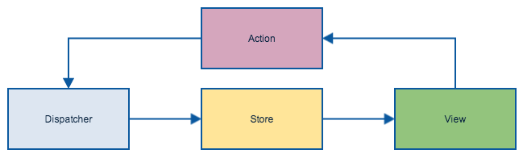
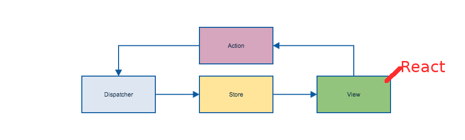
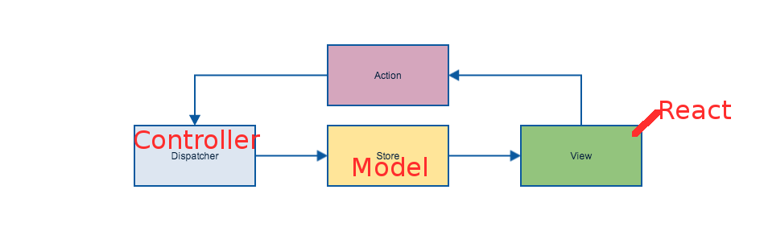

Fission
Real world React

React Is
- a frontend javascript library for building interfaces
- a javascript render library
React is Not
- an MVC framework
React's benefits
- high cohesion, loose coupling
- component system
- virtual dom diff
- 1-way data flow
gotchas
React JSX
render: function() {
return (
TODO
Templates in your code
Virtual DOM differencing
- Efficient rendering
- Faster applications
Wsome!
Let's build an app!

You can't
React is just a rendering library.
Current React MVC frameworks:
Flux
NOT a MVC
'Flux is an alternative to the "M" and "C" in the MVC architecture'
http://fluxxor.com/what-is-flux.htmlFlux diagram
Flux diagram
Flux diagram
Flux diagram
Flux
- It is just Architecture, not a framework
- You need to create your own 'Collection' (storage)
- You need to create your own 'fetch' method (http requests to API)
Flux
http://facebook.github.io/flux/docs/todo-list.html#the-future-of-flux"Really, Flux is just an architecture, not a framework. But perhaps a Flux boilerplate project might make sense, if there is enough interest."
Now What?
Build one!
- Models: Ampersandjs
- Rendering: Reactjs
- Routing: Pagejs
Fission
github.com/fissionjs/fissionModels
var Model = fission.model({
props: {
text: 'string',
done: 'boolean',
id: 'string'
},
url: '/v1/todos'
});
var model = new Model();
model.text = 'Mr Fission';
model.save();
Router
var router = fission.router;
var UserView = require('views/UserView');
router.route('/user/:id',{
view: UserView,
el: 'content'
});
Model View
var User = require('../models/user');
fission.modelView({
model: User,
render: function() {
var user = this.model.get('name');
return span({}, 'name: ' + user);
}
});
Collection view
var User = require('../models/User');
var UserItem = fission.modelView({
model: User,
render: function(){
div({className: "match"},
img({src: this.model.get('content')
}));
}
});
fission.collectionView({
model: User,
itemView: UserItem,
render: function() {
if (this.items.length === 0) {
return span(null, 'No Users right now!');
}
return this.items;
}
});
Lets make an app!
app.js
var Fission = require('fission');
var fission = new Fission();
module.exports = fission;router.js
var fission = require('./app');
var IndexView = require('./views'); // ./views/index.js
fission.router.route('/', {
title: 'Welcome',
view: IndexView,
el: 'content'
});
// Start the router
fission.router.start();
views/index.js
var fission = require('../app');
var DOM = fission.React.DOM;
module.exports = function() {
return fission.view({
init: function() {
return {
clicked: false
};
},
clickAction: function() {
this.setState({clicked: !this.state.clicked});
},
render: function() {
var headerText = this.state.clicked ? 'You clicked!' : 'Click me';
var Header = DOM.h1({}, headerText);
return DOM.div({
className: 'main',
onClick: this.clickAction
},
Header
);
}
});
};